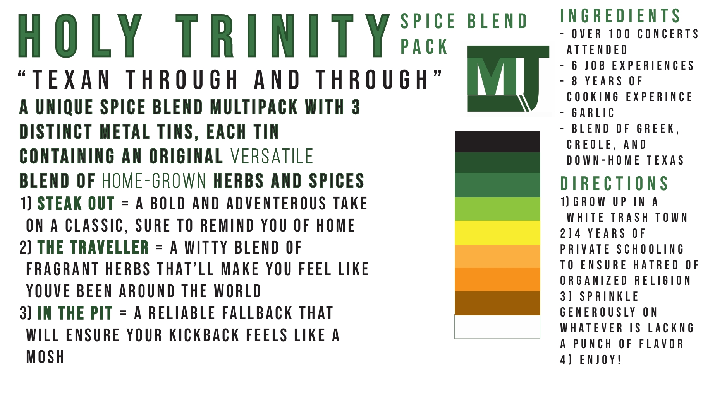
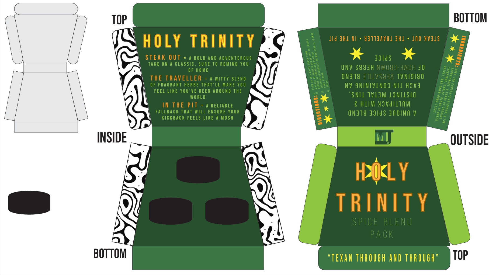
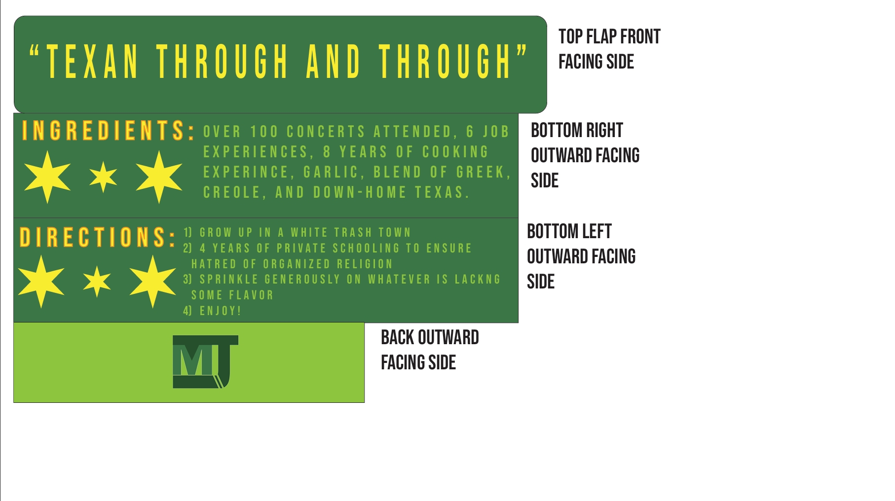
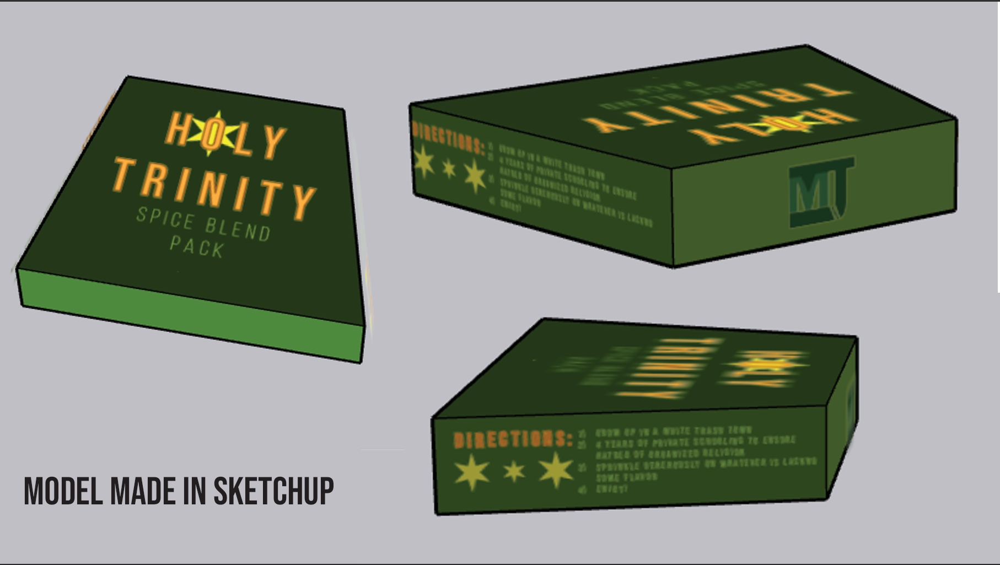
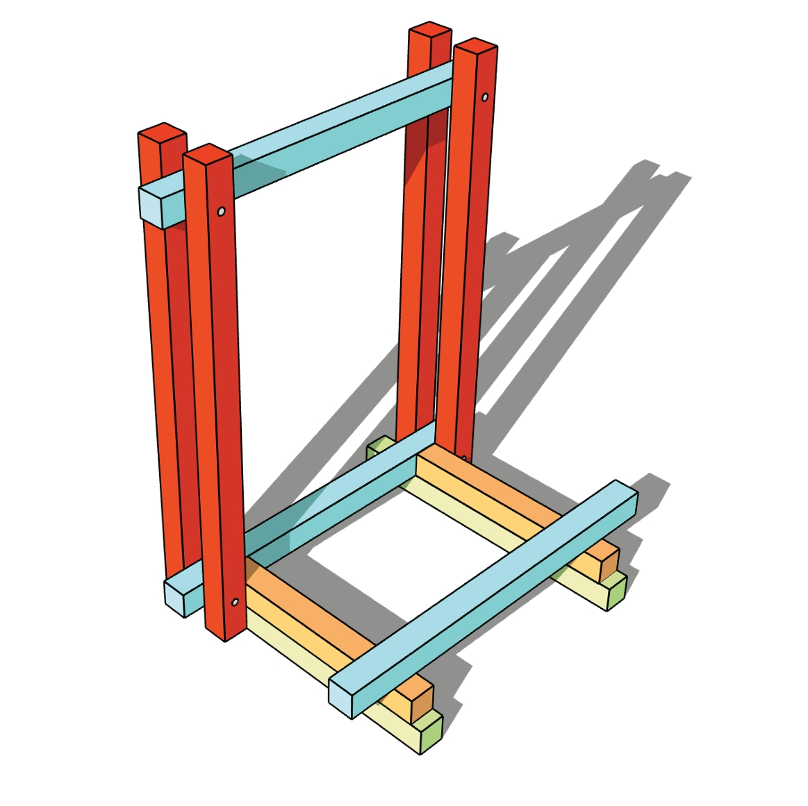
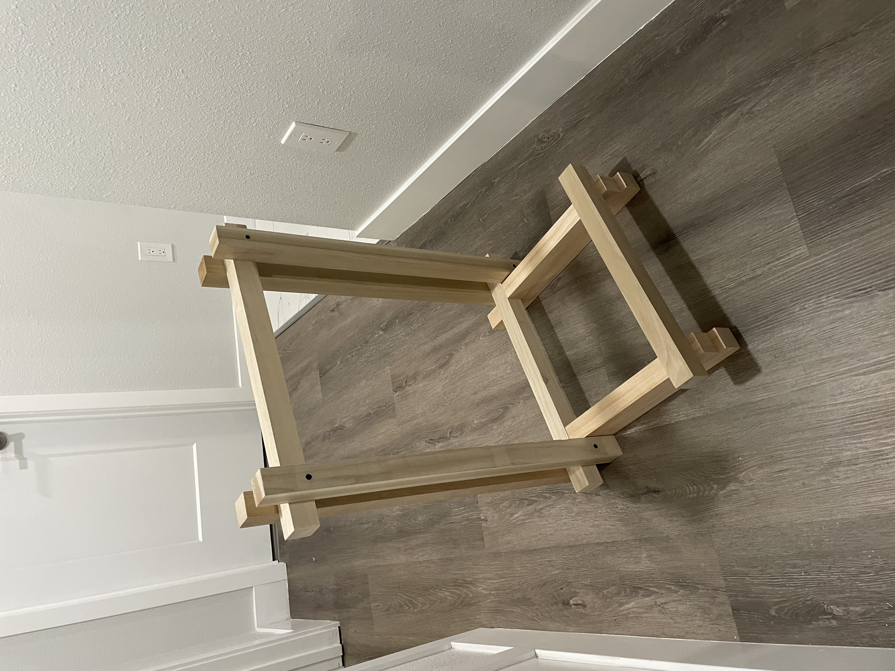
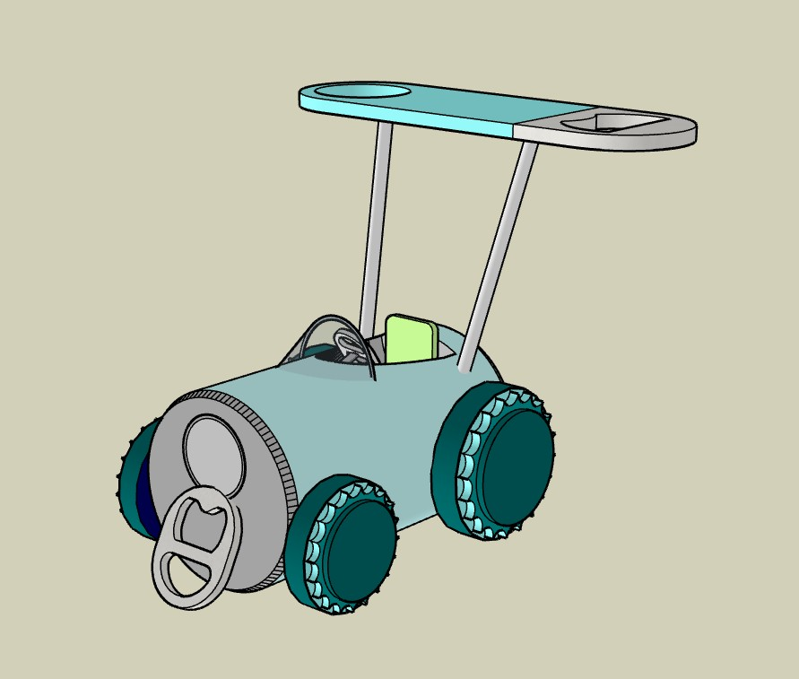
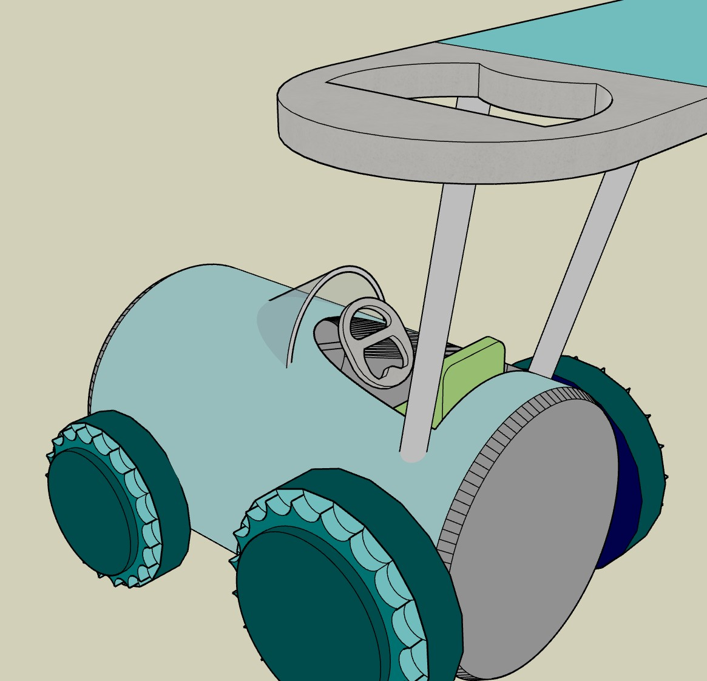

Graphic Design
Colorado Symphony Poster Mailer
A poster mailer design project made using Adobe Illustrator and Photoshop used to advertise the upcoming Colorado Symphony Orchestra performances. Utilizing color, space, and visual hierarchy to create an engaging design that captures the essence of the orchestra.
Song Accordion Booklet
A graphic design project exploring typography, layout, and color to help expand on the story of the song "Instant Crush" by Daft Punk featuring Julian Casablancas. Focusing on typography being an important medium for storytelling.
Non-Profit Event Flyer
A flyer I designed for a local nonprofit organization. I used Adobe Photoshop to create all the iconography outside of the pre-existing logo for SAFSN. Using vibrant colors and structured hierarchy to create an engaging design that promotes the event.
Interactive / Creative Coding
Song Finder Web App
An interactive web app that lets users search for songs using the iTunes API. Results display album art, title, and artist, with a modal view for additional details and audio previews. Built with JavaScript, JSON data handling, and a finite state machine to manage smooth UI interactions.
View Live App →
Duel Dash (p5.js Game)
A fast-paced two-player game built with p5.js where users can select a character and race against each other in a WASD vs IJKL keys setup. The game features simple mechanics, colorful graphics, and a fun competitive element. I implemented a finite state machine to manage game states like start screen, gameplay, and game over, ensuring smooth transitions and an engaging user experience. All iconography, graphics, and animations were created by me using Procreate.
Play Game →
This portfolio website was designed and coded by me using HTML, CSS, and JavaScript! c:
3D & Physical Models
Spice Blend Packaging Concept
A conceptual spice blend package designed and 3D modeled to explore form, branding, and usability. The design focuses on structure, visual identity, and how packaging can enhance user interaction. Blending aesthetics and functionality to create a unique and engaging product concept.




Wooden Guitar Stand
A functional guitar stand designed and built using only 2x2 wood and screws. Created as part of a prototyping project, focusing on stability, simplicity, and efficient material use. Used SketchUp for 3D modeling the stand fully and its parts individually.


Recycled Go-Kart Concept
A playful go-kart concept inspired by Mario Kart, designed around the idea of using recycled materials such as aluminum cans. Focused on creativity, form, and imaginative vehicle design.

